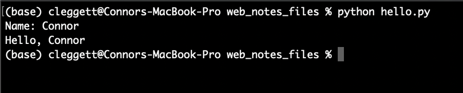
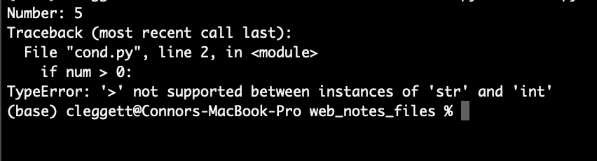
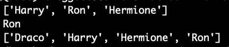
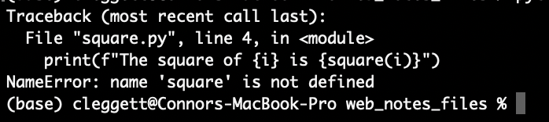
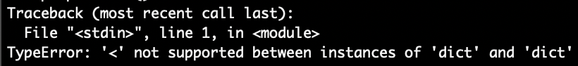
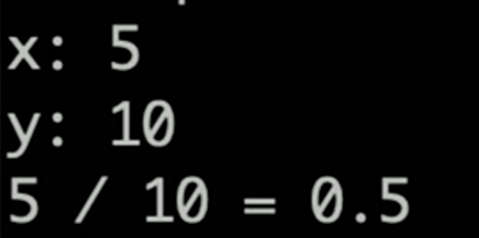
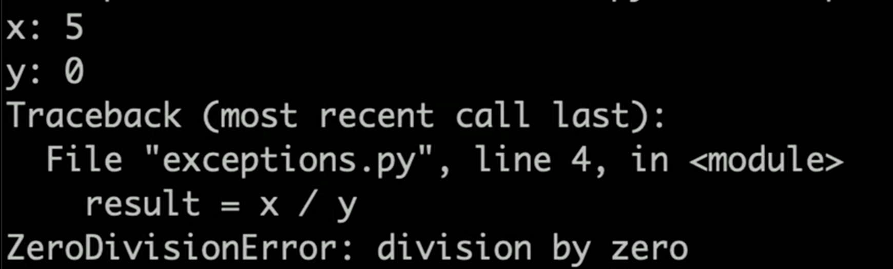
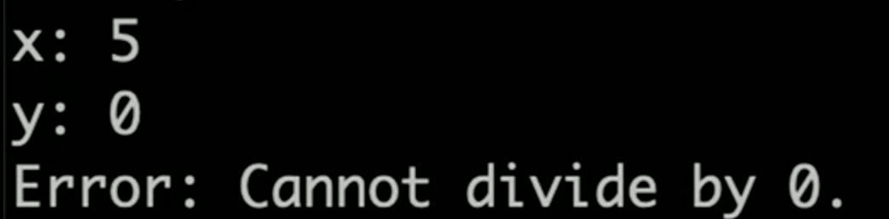
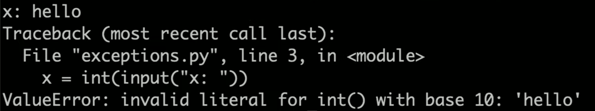

讲座 2
- Introduction
- Python
- Variables
- Formatting Strings
- Conditions
- Sequences
- Functions
- Modules
- Object-Oriented 编程
- Functional 编程
- Exceptions
Introduction
- So far, we’ve discussed how to build simple web pages using HTML and CSS, and how to use Git and GitHub in order to keep track of changes to our code and collaborate with others.
- Today, we’ll dive into Python, one of the two main 编程 languages we’ll use throughout this 课程.
Python

-
Python is a very powerful and widely-used language that will allow us to quickly build fairly complicated web applications. In this 课程, we’ll be using Python 3, although Python 2 is still in use in some places. When looking at outside 资源, be careful to make sure they’re using the same version.
-
Let’s start where we start with many 编程 languages: 你好, 世界. This program, written in Python, would look like this:
print("Hello, world!")
- To break down what’s going on in that line, there is a
printfunction built in to the python language, that takes an argument in parentheses, and displays that argument on the 命令行. - To actually write and run this program on your computers, you’ll first type this line into your text editor of choice, and then save the file as
something.py. 下一页, you’ll head over to your terminal, navigate to the directory containing your file, and typepython something.py. In the case of the above program, the words “你好, 世界!” will then be displayed in the terminal. - Depending on how your computer is set up, you 五月 have to type
python3instead ofpythonbefore the file 姓名, and you 五月 even have to 下载 Python if you haven’t already. After installing Python, we recommend that you also 下载 Pip, as you’ll need that later in the 课程. - When you type
python file.pyin your terminal, a program called an interpreter, which you downloaded together with Python, reads through your file line by line, and executes each line of the code. This is different than languages like C or Java, which need to be compiled into machine code before they can be run.
Variables
A key part of any 编程 language is the ability to create and manipulate variables. In order to assign a value to a variable in Python, the syntax looks like this:
a = 28
b = 1.5
c = "Hello!"
d = True
e = None
Each of these lines is taking the value to the right of the =, and storing it in the variable 姓名 to the left.
Unlike in some other 编程 languages, Python variable types are inferred, meaning that while each variable does have a type, we do not have to explicitly state which type it is when we create the variable. Some of the most common variable types are:
- int: An integer
- float: A decimal number
- str: A string, or sequence of characters
-
bool: A value that is either
TrueorFalse -
NoneType: A special value (
None) indicating the absence of a value.
Now, we’ll work on writing a 更多 interesting program that can take input from the user and say 你好 to that user. To do this, we’ll use another built in function called input which displays a prompt to the user, and returns whatever the user provides as input. For 示例, we can write the following in a file called name.py:
name = input("Name: ")
print("Hello, " + name)
When run on the terminal, this is what the program looks like:

A couple of things to point out here:
- In the first line, instead of assigning the variable 姓名 to an explicit value, we’re assigning it to whatever the
inputfunction returns. - In the second line, we’re using the
+operator to combine, or concatenate, two strings. In python, the+operator can be used to add numbers or concatenate strings and lists.
Formatting Strings
- While we can use the
+operator to combine strings as we did above, in the latest versions of python, there are even easier ways to work with strings, known as formatted strings, or f-strings for short. - To indicate that we’re using formatted strings, we simply add an
fbefore the quotation marks. For 示例, instead of using"Hello, " + nameas we did above, we could writef"Hello, {name}"for the same result. We can even plug a function into this string if we want, and turn our program above into the single line:
print(f"Hello, {input("Name: ")}")
Conditions
- Just like in other 编程 languages, Python gives us the ability to run different segments of code based on different conditions. For 示例, in the program below, we’ll change our output depending on the number a user types in:
num = input("Number: ")
if num > 0:
print("Number is positive")
elif num < 0:
print("Number is negative")
else:
print("Number is 0")
- Getting into how the above program works, conditionals in python contain a keyword (
if,elif, orelse) and then (except in theelsecase) a boolean expression, or an expression that evaluates to eitherTrueorFalse. Then, all of the code we want to run if a certain expression is true is indented directly below the statement. Indentation is 必需 as part of the Python syntax. - However, when we run this program, we run into an exception that looks like this:

- An exception is what happens when an error occurs while we’re running our python code, and over 时间 you’ll get better and better at interpreting these errors, which is a very valuable skill to have.
- Let’s look a bit 更多 closely at this specific exception: If we look at the bottom, we’ll see that we ran into a
TypeError, which generally means Python expected a certain variable to be of one type, but found it to be of another type. In this case, the exception tells us that we cannot use the>symbol to compare astrandint, and then above we can see that this comparison occurs in line 2. - In this case, it’s obvious that
0is an integer, so it must be the case that ournumvariable is a string. This is happening because it turns out that theinputfunction always returns a string, and we have to specify that it should be turned into (or cast into) an integer using theintfunction. This means our first line would now look like:
num = int(input("Number: "))
- Now, the program will work just as we intended!
Sequences
One of the most powerful parts of the Python language is its ability to work with sequences of data in addition to individual variables.
There are several types of sequences that are similar in some ways, but different in others. When explaining those differences, we’ll use the terms mutable/immutable and ordered/unordered. Mutable means that once a sequence has been defined, we can change individual elements of that sequence, and ordered means that the order of the objects matters.
Strings
Ordered: Yes
Mutable: No
We’ve already looked at strings a little bit, but instead of just variables, we can think of a string as a sequence of characters. This means we can access individual elements within the string! For 示例:
name = "Harry"
print(name[0])
print(name[1])
prints out the first (or index-0) character in the string, which in this case happens to be H, and then prints out the second (or index-1) character, which is a.
Lists
Ordered: Yes
Mutable: Yes
A Python list allows you to store any variable types. We create a list using square brackets and commas, as shown below. Similarly to strings, we can print an entire list, or some individual elements. We can also add elements to a list using append, and 排序 a list using sort
# This is a Python comment
names = ["Harry", "Ron", "Hermione"]
# Print the entire list:
print(names)
# Print the second element of the list:
print(names[1])
# Add a new name to the list:
names.append("Draco")
# Sort the list:
names.sort()
# Print the new list:
print(names)

Tuples
Ordered: Yes
Mutable: No
Tuples are generally used when you need to store just two or three values together, such as the x and y values for a point. In Python code, we use parentheses:
point = (12.5, 10.6)
Sets
Ordered: No
Mutable: N/A
Sets are different from lists and tuples in that they are unordered. They are also different because while you can have two or 更多 of the same elements within a list/tuple, a set will only store each value once. We can define an empty set using the set function. We can then use add and remove to add and remove elements from that set, and the len function to find the set’s size. 笔记 that the len function works on all sequences in python. Also 笔记 that despite adding 4 and 3 to the set twice, each item can only appear once in a set.
# Create an empty set:
s = set()
# Add some elements:
s.add(1)
s.add(2)
s.add(3)
s.add(4)
s.add(3)
s.add(1)
# Remove 2 from the set
s.remove(2)
# Print the set:
print(s)
# Find the size of the set:
print(f"The set has {len(s)} elements.")
""" This is a python multi-line comment:
Output:
{1, 3, 4}
The set has 3 elements.
"""
Dictionaries
Ordered: No
Mutable: Yes
Python Dictionaries or dicts, will be especially useful in this 课程. A dictionary is a set of key-value pairs, where each key has a corresponding value, just like in a dictionary, each word (the key) has a corresponding definition (the value). In Python, we use curly brackets to contain a dictionary, and colons to indicate keys and values. For 示例:
# Define a dictionary
houses = {"Harry": "Gryffindor", "Draco": "Slytherin"}
# Print out Harry's house
print(houses["Harry"])
# Adding values to a dictionary:
houses["Hermione"] = "Gryffindor"
# Print out Hermione's House:
print(houses["Hermione"])
""" Output:
Gryffindor
Gryffindor
"""
Loops
Loops are an incredibly important part of any 编程 language, and in Python, they come in two main forms: for loops and while loops. For now, we’ll focus on For Loops.
- For loops are used to iterate over a sequence of elements, performing some block of code (indented below) for each element in a sequence. For 示例, the following code will print out the numbers from 0 to 5:
for i in [0, 1, 2, 3, 4, 5]:
print(i)
""" Output:
0
1
2
3
4
5
"""
- We can condense this code using the python
rangefunction, which allows us to easily get a sequence of numbers. The following code gives the exact same result as our code from above:
for i in range(6):
print(i)
""" Output:
0
1
2
3
4
5
"""
- This type of loop can work for any sequence! For 示例, if we wish to print each 姓名 in a list, we could write the code below:
# Create a list:
names = ["Harry", "Ron", "Hermione"]
# Print each name:
for name in names:
print(name)
""" Output:
Harry
Ron
Hermione
"""
- We can get even 更多 specific if we want, and loop through each character in a single 姓名!
name = "Harry"
for char in name:
print(char)
""" Output:
H
a
r
r
y
"""
Functions
We’ve already seen a few python functions such as print and input, but now we’re going to dive into writing our own functions. To get started, we’ll write a function that takes in a number and squares it:
def square(x):
return x * x
Notice how we use the def keyword to indicate we’re defining a function, that we’re taking in a single input called x and that we use the return keyword to indicate what the function’s output should be.
We can then “call” this function just as we’ve called other ones: using parentheses:
for i in range(10):
print(f"The square of {i} is {square(i)}")
""" Output:
The square of 0 is 0
The square of 1 is 1
The square of 2 is 4
The square of 3 is 9
The square of 4 is 16
The square of 5 is 25
The square of 6 is 36
The square of 7 is 49
The square of 8 is 64
The square of 9 is 81
"""
Modules
As our 项目 get larger and larger, it will become useful to be able to write functions in one file and run them in another. In the case above, we could create create one file called functions.py with the code:
def square(x):
return x * x
And another file called square.py with the code:
for i in range(10):
print(f"The square of {i} is {square(i)}")
However, when we try to run square.py, we run into the following error:

We run into this problem because by default, Python files don’t know 关于 each other, so we have to explicitly import the square function from the functions module we just wrote. Now, when square.py looks like this:
from functions import square
for i in range(10):
print(f"The square of {i} is {square(i)}")
Alternatively, we can choose to import the entire functions module and then use dot notation to access the square function:
import functions
for i in range(10):
print(f"The square of {i} is {functions.square(i)}")
There are many built-in Python modules we can import such as math or csv that give us access to even 更多 functions. Additionally, we can 下载 even 更多 Modules to access even 更多 functionality! We’ll spend a lot of 时间 using the Django Module, which we’ll discuss in the 下一页 讲座.
Object-Oriented 编程
Object Oriented 编程 is a 编程 paradigm, or a way of thinking 关于 编程, that is centered around objects that can store information and perform actions.
- Classes: We’ve already seen a few different types of variables in python, but what if we want to create our own type? A Python Class is essentially a template for a new type of object that can store information and perform actions. Here’s a class that defines a two-dimensional point:
class Point():
# A method defining how to create a point:
def __init__(self, x, y):
self.x = x
self.y = y
- 笔记 that in the above code, we use the keyword
selfto represent the object we are currently working with.selfshould be the first argument for any method within a Python class.
Now, let’s see how we can actually use the class from above to create an object:
p = Point(2, 8)
print(p.x)
print(p.y)
""" Output:
2
8
"""
Now, let’s look at a 更多 interesting 示例 where instead of storing just the coordinates of a Point, we create a class that represents an airline flight:
class Flight():
# Method to create new flight with given capacity
def __init__(self, capacity):
self.capacity = capacity
self.passengers = []
# Method to add a passenger to the flight:
def add_passenger(self, name):
self.passengers.append(name)
However, this class is flawed because while we set a capacity, we could still add too many passengers. Let’s augment it so that before adding a passenger, we check to see if there is room on the flight:
class Flight():
# Method to create new flight with given capacity
def __init__(self, capacity):
self.capacity = capacity
self.passengers = []
# Method to add a passenger to the flight:
def add_passenger(self, name):
if not self.open_seats():
return False
self.passengers.append(name)
return True
# Method to return number of open seats
def open_seats(self):
return self.capacity - len(self.passengers)
笔记 that above, we use the line if not self.open_seats() to determine whether or not there are 打开 seats. This works because in Python, the number 0 can be interpretted as meaning False, and we can also use the keyword not to signify the opposite of the following statement so not True is False and not False is True. Therefore, if open_seats returns 0, the entire expression will evaluate to True
Now, let’s try out the class we’ve created by instantiating some objects:
# Create a new flight with o=up to 3 passengers
flight = Flight(3)
# Create a list of people
people = ["Harry", "Ron", "Hermione", "Ginny"]
# Attempt to add each person in the list to a flight
for person in people:
if flight.add_passenger(person):
print(f"Added {person} to flight successfully")
else:
print(f"No available seats for {person}")
""" Output:
Added Harry to flight successfully
Added Ron to flight successfully
Added Hermione to flight successfully
No available seats for Ginny
"""
Functional 编程
In addition to supporting Object-Oriented 编程, Python also supports the Functional 编程 Paradigm, in which functions are treated as values just like any other variable.
Decorators
One thing made possible by functional 编程 is the idea of a decorator, which is a higher-order function that can modify another function. For 示例, let’s write a decorator that announces when a function is 关于 to begin, and when it ends. We can then apply this decorator using an @ symbol.
def announce(f):
def wrapper():
print("About to run the function")
f()
print("Done with the function")
return wrapper
@announce
def hello():
print("Hello, world!")
hello()
""" Output:
About to run the function
Hello, world!
Done with the function
"""
Lambda Functions
Lambda functions provide another way to create functions in python. For 示例, if we want to define the same square function we did earlier, we can write:
square = lambda x: x * x
Where the input is to the left of the : and the output is on the right.
This can be useful when we don’t want to write a whole separate function for a single, small use. For 示例, if we want to 排序 some objects where it’s not clear at first how to 排序 them. Imagine we have a list of people, but with names and houses instead of just names that we wish to 排序:
people = [
{"name": "Harry", "house": "Gryffindor"},
{"name": "Cho", "house": "Ravenclaw"},
{"name": "Draco", "house": "Slytherin"}
]
people.sort()
print(people)
This, however, leaves us with the error:

Which occurs because Python doesn’t know how to compare two Dictionaries to check if one is 较少 than the other.
We can solve this problem by including a key argument to the 排序 function, which specifies which part of the dictionary we wish to use to 排序:
people = [
{"name": "Harry", "house": "Gryffindor"},
{"name": "Cho", "house": "Ravenclaw"},
{"name": "Draco", "house": "Slytherin"}
]
def f(person):
return person["name"]
people.sort(key=f)
print(people)
""" Output:
[{'name': 'Cho', 'house': 'Ravenclaw'}, {'name': 'Draco', 'house': 'Slytherin'}, {'name': 'Harry', 'house': 'Gryffindor'}]
"""
While this does work, we’ve had to write an entire function that we’re only using once, we can make our code 更多 readable by using a lambda function:
people = [
{"name": "Harry", "house": "Gryffindor"},
{"name": "Cho", "house": "Ravenclaw"},
{"name": "Draco", "house": "Slytherin"}
]
people.sort(key=lambda person: person["name"])
print(people)
""" Output:
[{'name': 'Cho', 'house': 'Ravenclaw'}, {'name': 'Draco', 'house': 'Slytherin'}, {'name': 'Harry', 'house': 'Gryffindor'}]
"""
Exceptions
During this 讲座, we’ve run into a few different exceptions, so now we’ll look into some new ways of dealing with them.
In the following chunk of code, we’ll take two integers from the user, and attempt to divide them:
x = int(input("x: "))
y = int(input("y: "))
result = x / y
print(f"{x} / {y} = {result}")
In many cases, this program works well:

However, we’ll run into problems when we attempt to divide by 0:

We can deal with this messy error using Exception Handling. In the following block of code, we will try to divide the two numbers, except when we get a ZeroDivisionError:
import sys
x = int(input("x: "))
y = int(input("y: "))
try:
result = x / y
except ZeroDivisionError:
print("Error: Cannot divide by 0.")
# Exit the program
sys.exit(1)
print(f"{x} / {y} = {result}")
In this case, when we try it again:

However, we still run into an error when the user enters non-numbers for x and y:

We can solve this problem in a similar manner!
import sys
try:
x = int(input("x: "))
y = int(input("y: "))
except ValueError:
print("Error: Invalid input")
sys.exit(1)
try:
result = x / y
except ZeroDivisionError:
print("Error: Cannot divide by 0.")
# Exit the program
sys.exit(1)
print(f"{x} / {y} = {result}")
That’s all for this 讲座! 下一页 时间, we’ll use Python’s Django Module to build some applications!